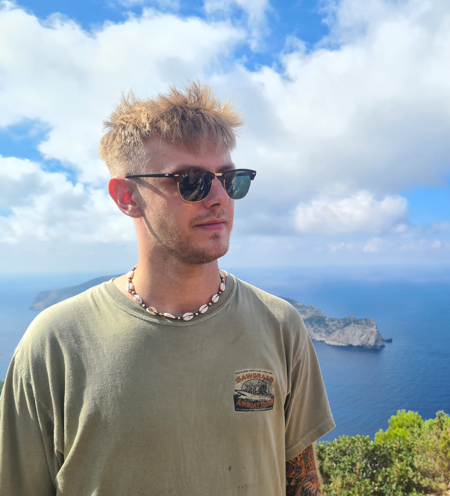

Where I am from
Born and raised amidst the captivating coastal landscapes of Varberg, Sweden, I embody the essence of this picturesque city. From the moment I took my first breath, Varberg's salty sea breeze and rugged cliffs became an integral part of my identity.
Growing up in Varberg, I was immersed in a world where sandy beaches stretched endlessly along the horizon, and ancient fortresses stood as silent guardians of a rich history. Every cobblestone street, every gust of wind carried tales of generations past, shaping my understanding of heritage and tradition.
Varberg's vibrant culture infused my upbringing with a sense of creativity and exploration. From wandering through art exhibitions in the city's galleries to reveling in the melodies of local musicians echoing through the cobblestone alleys, I found inspiration at every turn.
Yet, amidst the timeless beauty of Varberg, I also discovered a spirit of resilience and adaptability. The ever-changing tides of the North Sea mirrored my own journey, instilling a sense of strength and determination that would guide me through life's challenges.
Today, whether I stroll along the historic promenade, reminiscing about childhood adventures, or stand atop the cliffs, gazing out at the vast expanse of the sea, Varberg remains my beloved hometown—a place where memories are etched in the sands of time, and the echoes of my roots reverberate through my soul.
What I like to do
My life is an exhilarating blend of thrilling adventures and soul-stirring experiences. At the heart of it all lies my deep passion for the ocean, where I find solace and joy in the rhythmic embrace of its waves. Swimming in the vast expanse of the ocean is not just a hobby—it's a way of life, a source of endless freedom and rejuvenation.
But my thirst for excitement doesn't end there. I thrive on adrenaline-pumping activities that push the boundaries of my courage and resilience. From embarking on wild adventures in uncharted territories to exploring the far reaches of the globe, I'm always seeking new challenges and opportunities for growth. Whether it's trekking through dense jungles, scaling towering mountains, or diving into the depths of unknown waters, or carving through pristine slopes on skis, I'm driven by a relentless curiosity to discover the wonders of our world.
Amidst the thrill of exploration, I find time to indulge in the vibrant tapestry of music and culture. Concerts and festivals are not just events to me—they're transformative experiences where melodies weave stories and rhythms pulse with the heartbeat of humanity. Dancing under the stars, surrounded by kindred spirits, I lose myself in the euphoria of the moment, soaking in the magic of live music and collective celebration.
And when I crave the rush of speed and freedom, I hit the open road on my motorcycle, the wind in my hair and the roar of the engine beneath me. Riding through winding mountain passes or along scenic coastal highways, every twist and turn ignites my senses, reminding me of the raw power and beauty of the journey.
In essence, my life is a symphony of adrenaline-fueled pursuits and soul-stirring experiences—a testament to my unyielding thirst for adventure and my unwavering love for the wonders of this world.
Hobbies
In the realm of relaxation and enjoyment, my hobbies offer me a diverse array of fulfilling experiences. At the heart of my leisure time is my love for gaming on my PC—a gateway to immersive worlds and thrilling adventures. Whether I'm delving into epic quests, battling alongside friends in multiplayer arenas, or simply exploring virtual landscapes, gaming is a source of endless excitement and camaraderie.
But amidst the digital realms, I also cherish the joy of spending quality time with loved ones. Hanging out with friends brings laughter, camaraderie, and shared memories that enrich my life. Whether it's catching up over a meal, embarking on spontaneous adventures, or simply enjoying each other's company, these moments are a reminder of the importance of friendship and connection.
Equally dear to my heart is the time I spend with my beloved partner and our feline companions. Our cozy moments together, whether cuddled up on the couch with our cats or embarking on outdoor escapades, fill my soul with warmth and contentment. Their presence is a constant source of love and support, enriching my life in countless ways.
And when I yearn for a taste of nature's tranquility, I seek solace in the serene beauty of the woods. Taking leisurely walks amidst towering trees and rustling leaves, I feel a profound sense of peace and rejuvenation. The crisp air, the gentle whispers of nature, and the sights and sounds of the forest envelop me in a tranquil embrace, offering respite from the hustle and bustle of daily life.
In essence, my hobbies are a reflection of my desire for balance, connection, and joy. Whether I'm diving into virtual adventures, sharing laughter with friends, cherishing moments with loved ones, or communing with nature, each activity brings its own unique blend of fulfillment and happiness to my life.